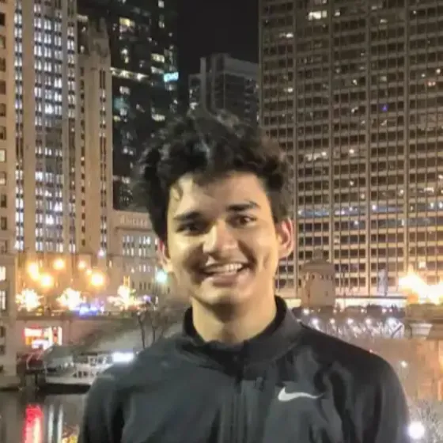

Accelerating chip design.
Go from idea to tapeout 100x faster
Why
Most EDA tooling was built decades ago, under assumptions very different from modern computing. Their arcane user experience requires extensive scripting to get work done.
EDA vendors aren't incentivised to build simpler tools since they can charge to set up and provide you with an environment that just works.
We are changing this with performant, user-friendly tools so you can spend time on your design instead of endless Tcl / Python scripting to orchestrate workflows.
How
TinyEDA Studio is an integrated digital ASIC design environment. It massively accelerates the physical design process, improves performance, power, and area (PPA) results, and makes it easier to trace design errors back to original RTL.
Faster, simpler tools- Faster classical and ML algorithms for macro placement, place and route, and static timing analysis.
- GPU acceleration for massively parallel workloads and SIMD/vector compute for CPU workloads.
- Well-designed APIs that eliminate glue code between tools.
We will use these tools internally alongside automated schematic, layout, and simulation tooling to create digital / analog design IP for:
- Automotive
- Aerospace (radiation hardened)
- Consumer electronics
- Industrial automation
- Medical
- Nuclear (radiation hardened)
Who

Rahul Bhagwat
Founder
FAQ
Can I run this locally?
Yes. We will have local apps for MacOS, Windows, and Linux, as well as a collaborative web app hostable on-premise.
How difficult is it to switch from my existing EDA suite?
We will provide tooling to port your Tcl scripts and tool-specific configurations, making the switch painless and inexpensive for your organization.
Why should we trust your tool?
We will formally verify equivalence where applicable and work closely with foundries to qualify our tools as signoff-ready.